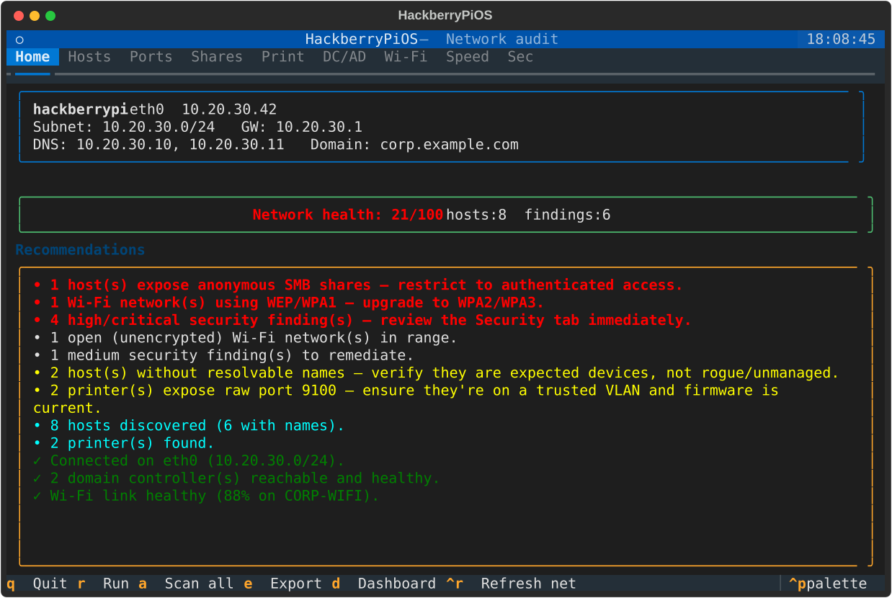
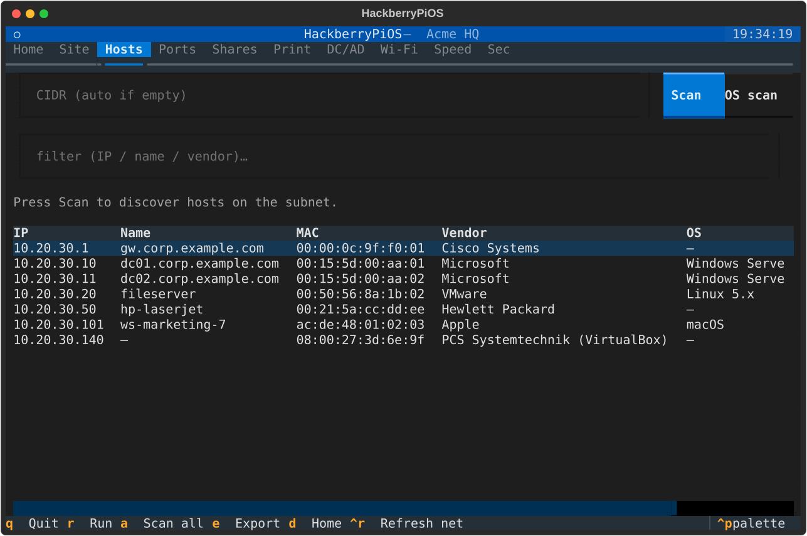
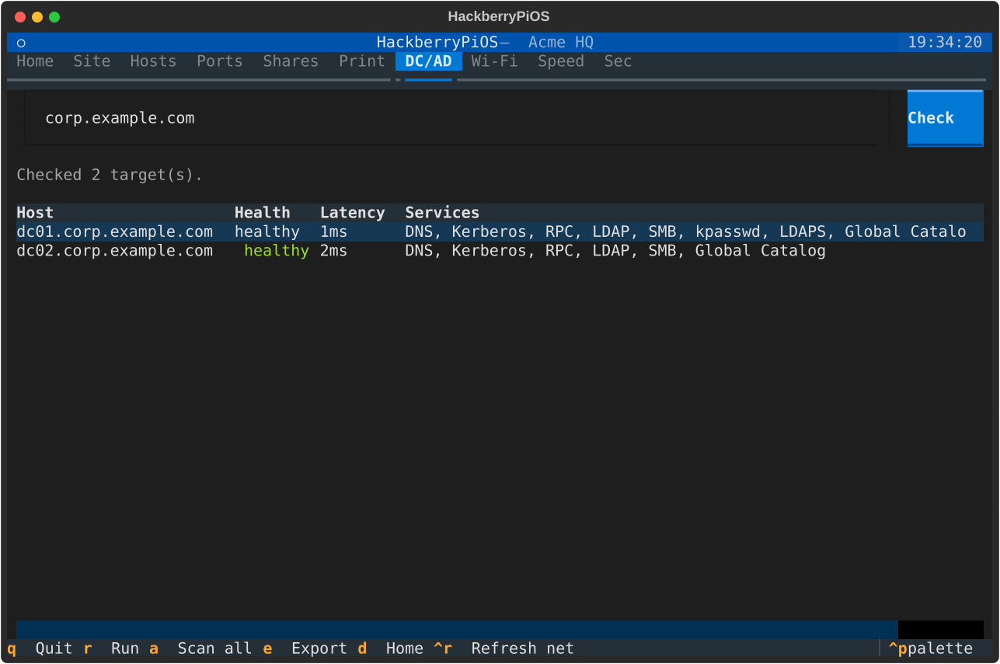
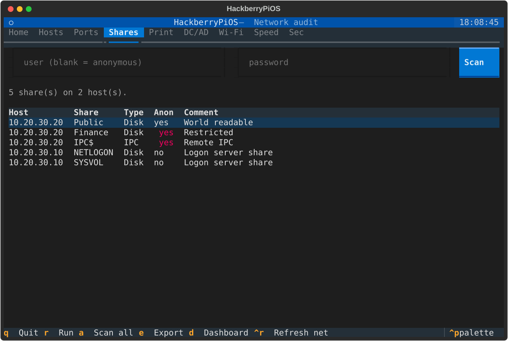
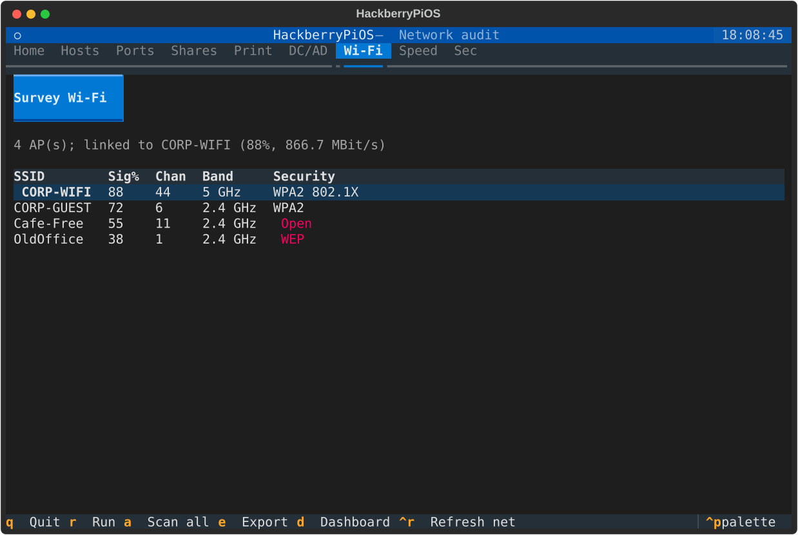
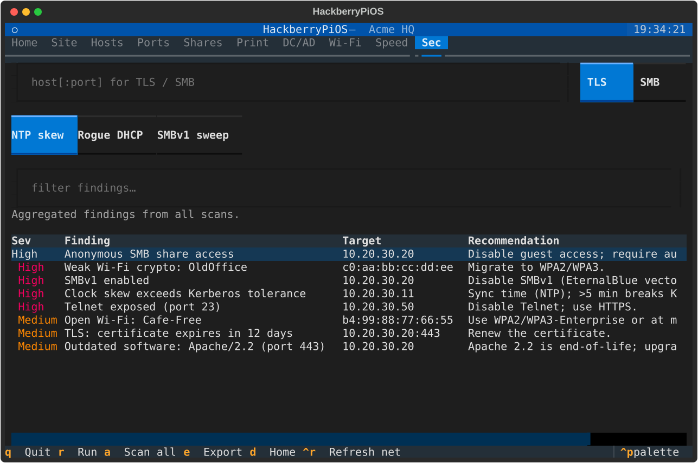
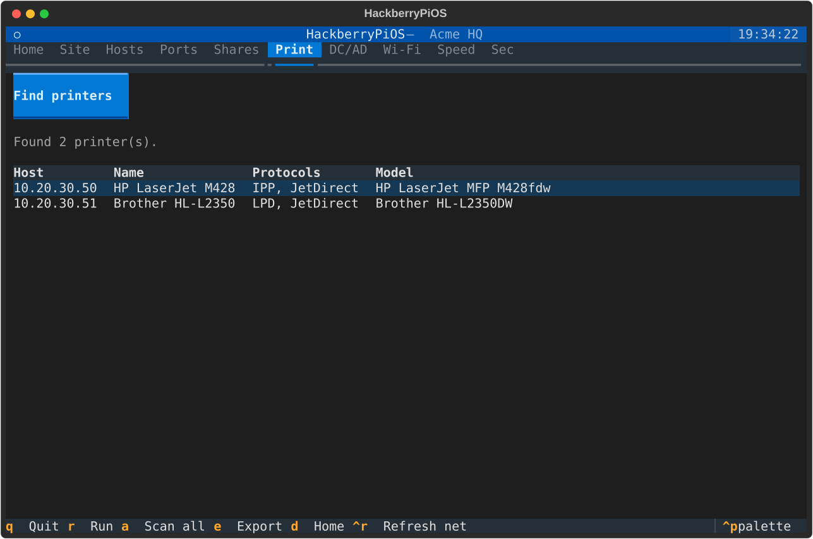
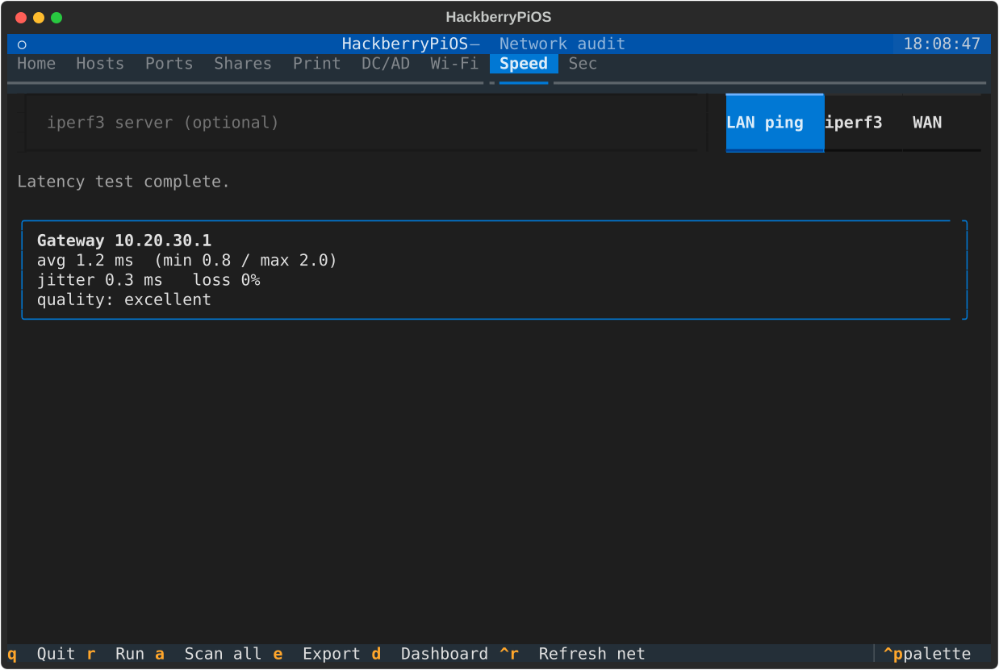

Walk into any network you manage — Linux, Windows Active Directory, or mixed — and get an instant, compact overview plus prioritised recommendations. A keyboard-driven terminal UI built for the HackberryPi's small display.

Nine focused tools, one keyboard-driven dashboard, zero agents on your targets.
A 0–100 score and a colour-coded, prioritised action list — your instant overview the moment you connect.
Find every device by IP, name, MAC and vendor using arp-scan → nmap → ARP cache, with reverse-DNS and NetBIOS name resolution.
Locate DCs via AD's DNS SRV records and health-check Kerberos, LDAP/LDAPS, SMB and the Global Catalog with latency.
Enumerate shares per host and flag anonymous / guest-readable shares — a common, high-impact misconfiguration.
Fast top-ports or full scans with service/version detection. Pure-Python fallback when nmap isn't installed.
Find printers via mDNS/Bonjour and by probing IPP, LPD and raw JetDirect ports across the subnet.
Nearby APs with signal, channel, band and security; current link quality. Open and WEP/WPA1 networks are flagged.
Gateway RTT/jitter/loss, iperf3 LAN throughput, and a quick WAN download sanity check.
SMBv1 / SMB-signing checks, risky cleartext services, weak Wi-Fi — aggregated, severity-sorted findings.
Real exports from the terminal UI. Crisp SVG — zoom in as far as you like.







Built for Raspberry Pi OS (Bookworm+). One script does it all.
# Clone and install (system tools + Python venv + capabilities)
git clone https://github.com/fmatsch/HackberryPiOS.git
cd HackberryPiOS
./install.sh
# Launch the terminal UI
.venv/bin/hackberrypiosMake the UI open automatically when you log in on the handheld's console — and turn it off just as easily.
./scripts/autostart.sh enable
./scripts/autostart.sh disable
./scripts/autostart.sh statusOnly triggers on the primary console (tty1),
so SSH sessions are never affected. Suppress a single boot with
HPI_NO_AUTOSTART=1.
Run a full sweep over SSH or on a schedule and export JSON.
hackberrypios --cli
hackberrypios --cli \
--domain corp.example.com \
--json report.json
hackberrypios --cli --print-json | jq .Fully keyboard-operable — ideal for the HackberryPi's hardware keyboard.
| ← → | Switch between tabs |
| r | Run the current tab's default scan |
| a | Scan all — full sweep across every capability |
| d | Jump to the Home dashboard |
| Ctrl+R | Re-read local network info |
| e | Export a JSON report |
| q | Quit |
A defensive, administration-focused tool — by design.
Full details in SECURITY.md, USAGE.md and ARCHITECTURE.md.